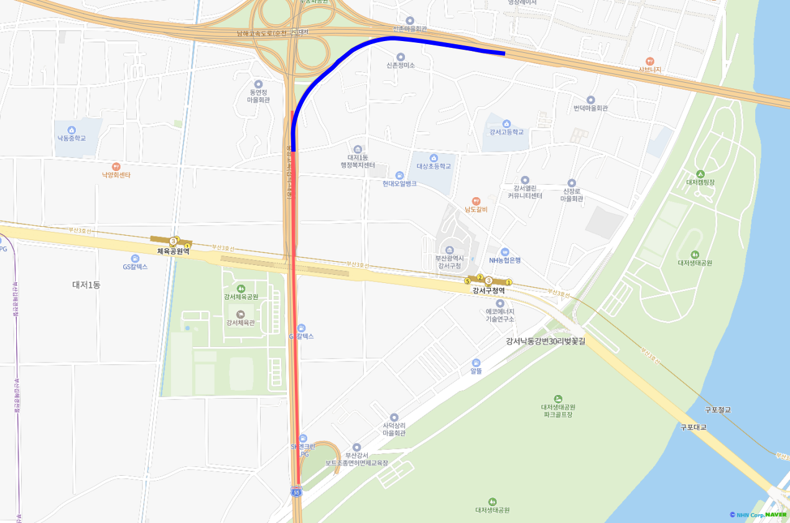

01
대상 구간 점검
접근 방향과 측정 위치를 분리
시설 코드만으로 집계하면 서로 다른 접근 방향이 섞일 수 있었습니다. 연결도로 통과 조건과 속도를 측정할 도로 구간을 따로 확인했습니다.
접근 방향 확인측정 구간 선택속도 출처 구분시간별 집계원본 대조
확인한 결과부천·중동 시험 이후 업무 분석은 부천IC·대저JC를 대상으로 진행했습니다.
정체 위치 분석과 링크 좌표 품질 검증
속도 자료에 위치를 연결하고, 원천 좌표 오류를 보완했습니다.
49,728행 · 74개 링크 · 시·종점 좌표 누락 0건작업 배경 · 부천IC·대저JC 접근 구간에서 언제, 어느 위치에 정체가 관측되는지 설명하는 분석과 보고자료를 작성했습니다.
분석 자료: 2025.10.13–19 / 좌표 보완: 2026.09.08 · 당시 추출본 기준

웹 작업 기록QR 또는 제목 링크로 상세 내용 열기
시설 전체 평균에 가려지는 저속 위치를 접근 방향·시간·구간별로 설명했습니다.
속도표 14개·상세표 49,728행과 링크 74개의 위치정보를 정리했습니다. 같은 시각의 구간 1·2는 4.4·4.3km/h, 구간 3은 76.0km/h로 관측돼 위치별 차이를 보고자료에 제시했습니다.
1·2: 연결도로 진입부 저속
3: 본선의 평균속도
2025.10.13 18시 삼락IC→대저JC 접근 구간입니다. 1·2는 연결도로 진입부의 저속, 3은 본선 속도입니다. 좌표 연결도는 위치 대응용이며 실제 도로 곡선을 생략했습니다. 배경지도 원본 표기: © NHN Corp. / NAVER.
시간별 속도와 링크 기준목록을 분리했습니다. 복합키로 좌표를 연결하고 종료 Y 오류는 원본 노드 자료로 보완했습니다. 결합 전후 행수·기존 값·좌표 누락을 검사하고, 미관측 속도를 0으로 채우지 않았습니다.
분석 자료의 2025.10.13–19와 작업 시점을 구분했습니다. 개별 단계는 작업 순서입니다.
대상 구간 점검
시설 코드만으로 집계하면 서로 다른 접근 방향이 섞일 수 있었습니다. 연결도로 통과 조건과 속도를 측정할 도로 구간을 따로 확인했습니다.
확인한 결과부천·중동 시험 이후 업무 분석은 부천IC·대저JC를 대상으로 진행했습니다.
입력 처리
공식 속도가 기간 내내 없는 도로만 운행기록으로 보완하고 출처를 표시했습니다. 어느 자료에도 기록이 없는 구간은 미관측으로 남겼습니다.
확인한 결과미관측을 0km/h나 원활한 상태로 임의 대체하지 않아 관측 범위를 유지했습니다.
결과 확인
평균속도를 구간과 시간으로 나눠 시각화했습니다. 삼락 접근의 10월 13일 18시에는 구간 1·2와 구간 3의 속도 차이가 크게 나타났습니다.
확인한 결과구간 1·2는 4.4·4.3km/h, 구간 3은 76.0km/h였습니다. 시설 평균보다 저속 위치를 구체적으로 설명할 수 있었습니다.
보고자료 정리
접근 경로마다 공식 속도와 보완 자료의 비중이 달랐으므로 단순 혼잡도 순위로 비교하지 않았습니다. 날짜별 속도표와 상세표에 계산 조건을 붙였습니다.

원본 지도 크게 보기 ↗ · 제출 포트폴리오에 사용한 결과 이미지입니다.
확인한 결과속도표 14개·상세표 49,728행을 구성했습니다. 정체가 관측된 위치·시간의 근거이며 정체 원인이나 개선사업 효과를 확정하는 결과는 아닙니다.
2026.09.08 · 좌표 결합
IDXNAME과 link_id 복합키로 시간별 자료에 시작 좌표를 결합했습니다. 하나의 링크에 여러 매핑행이 있어도 좌표가 일치하는지 먼저 검사해 행이 증식하지 않도록 했습니다.
확인한 결과49,728개 행의 기존 값과 순서를 유지하고 74개 고유 링크에 좌표를 연결했습니다. 좌표 누락·충돌은 0건입니다.
2026.09.08 · 오류 보완
매핑 추출본에서 종료 Y가 종료 X와 같은 문제를 발견했습니다. 값을 추정하지 않고 IDXNAME과 종료 노드 ID를 원본 노드 자료에 연결했습니다. 시작 좌표와 종료 X의 일치도 함께 대조했습니다.
확인한 결과74행·13컬럼의 링크 기준목록에 시·종점 좌표를 확보했습니다. 노드 정의상의 좌표이며 실제 주행방향·현재 도로망 또는 확정 EPSG를 뜻하지 않습니다.
정체가 관측된 위치·시간을 설명한 결과입니다. 정체 원인이나 개선사업 효과를 확정하지 않았습니다.
시설 코드만으로 묶으면 다른 접근 방향과 측정 구간이 섞일 수 있습니다. 램프 통과 조건과 정체 분석 구간을 따로 확인하고, 도로 연결 순서가 시각자료와 일치하는지 점검했습니다.
시간대 평균속도는 원천 행수 가중 기준으로 계산한 값입니다. 15분 단위에서 기준속도 미만인 구간이 관측됐는지를 세는 정체 빈도와는 다른 지표로 설명했습니다.
IC는 나들목, JC는 고속도로 분기점입니다. 부천·중동으로 시험한 뒤 업무 분석은 부천IC·대저JC를 대상으로 진행했습니다.
원본 히트맵의 24시간×9개 구간, 총 216칸을 같은 순서로 재구성했습니다. 구간 1은 램프에 가장 가깝고, 각 칸의 너비는 실제 도로 길이를 뜻하지 않습니다.
공식 속도와 실제 운행기록의 구성, 분석 링크 수가 다른 접근 경로를 단순 혼잡도 순위로 비교하지 않았습니다. 특정 경로 안에서 어느 구간과 시간에 저속이 관측되는지를 먼저 설명했습니다.
한 날짜의 관측 사례입니다. 시간대 평균속도와 15분마다 정체가 나타난 횟수는 다른 지표입니다.
삼락 접근은 분석 링크 9개, 김해 접근은 10개입니다. 삼락의 공식 속도 670칸·운행기록 4,815칸·미관측 563칸과 김해의 공식 속도 6,694칸·미관측 26칸은 출처 구성도 다릅니다. 이 차이를 무시한 단순 순위 대신 지표가 만들어진 조건을 보고자료에 포함했습니다.
업무 결과는 날짜별 히트맵·빈도표·상세 분석표와 계산 설명입니다. 휴게소 이용지표도 원천과 집계를 별도로 검산했습니다. 이 자료로 개선사업 선정이나 실제 정체 해소 효과까지 확인한 것은 아닙니다.
원본 지도는 제출용 PDF에만 포함하며, 웹에는 분석 구간을 연결하는 구조와 계산 설명을 제공합니다.
| 용어 | 이 자료에서의 의미 |
|---|---|
| IC·JC·램프 | IC는 일반도로와 고속도로의 나들목, JC는 고속도로 사이의 분기점입니다. 램프는 연결도로입니다. |
| 링크·히트맵 | 링크는 분석할 도로 구간입니다. 히트맵은 구간·시간별 속도를 색으로 나타낸 표입니다. |
| 미관측 | 속도 기록이 없는 상태입니다. 정체 또는 원활한 상태로 대신 채우지 않았습니다. |